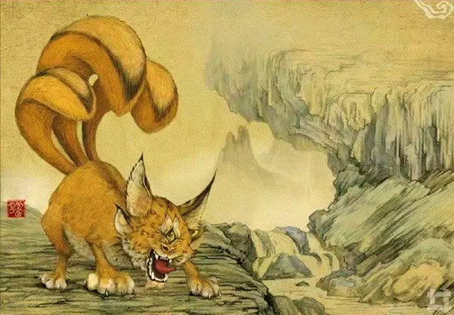

Huan
The Huan is a fascinating and
enigmatic creature from folklore, known for its
unique appearance and its remarkable ability to
mimic the sounds of other animals. This single-eyed,
three-tailed cat-like being is both intriguing and
potentially unsettling due to its skill in imitating
various noises.

Appearance
The Huan resembles a cat-like
creature with several distinctive features:
- Single Eye: Unlike most
creatures, the Huan has a single large eye
positioned centrally on its forehead. This eye
is said to be exceptionally perceptive, allowing
the Huan to detect and mimic a wide range of
sounds.
- Three Tails: The Huan is
notable for its three long, slender tails, which
are often depicted as being prehensile and
capable of intricate movements. These tails are
not only a distinctive feature but may also play
a role in its mimicking abilities.
- Cat-like Features: Its body is
sleek and feline in shape, with a graceful yet
slightly eerie appearance. The fur can vary in
color, but it is often depicted as being sleek
and dark, adding to its mysterious aura.
Abilities
The Huan’s primary ability is its exceptional
mimicry of animal sounds. This
skill encompasses several notable aspects:
- Sound Imitation: The Huan can
perfectly replicate the calls, growls, and cries
of other animals. This ability is so precise
that it can trick even the most discerning
creatures into believing that the sounds are
coming from the actual animals.
- Auditory Deception: Using its
mimicry skills, the Huan can create confusion or
lure other beings into traps. By imitating
distress calls, for example, it can attract
predators or other animals to a specific
location.
- Enhanced Hearing: The single
eye of the Huan is believed to grant it
heightened auditory perception, allowing it to
hear and mimic sounds from great distances.
Behavior
The Huan is known for its elusive and
secretive behavior. It tends to:
- Operate in Shadows: The Huan is
often found in shadowy or secluded areas, where
its ability to mimic sounds can be used most
effectively. It prefers to remain hidden while
using its mimicry to influence its surroundings.
- Playful and Cunning: Though it
may not always have malicious intent, the Huan
often uses its mimicry for playful or cunning
purposes. It may mimic the sounds of distressed
animals to provoke a reaction or to observe the
responses of other creatures.
- Avoidance of Conflict: The Huan
generally avoids direct confrontation. Instead,
it relies on its mimicry skills to outwit or
mislead rather than engaging in physical
altercations.
Habitat
The Huan is typically found in forested or
densely vegetated areas, where it can
easily blend into its surroundings and use its
mimicry to its advantage. These habitats provide
ample cover and a variety of sounds for the Huan to
imitate.
- Secluded Environments: It
prefers locations that offer concealment and
minimal human activity. Its ability to remain
hidden while mimicking sounds makes dense
forests, dark caves, or secluded glades ideal
habitats.
- Abundance of Wildlife: Areas
with diverse wildlife are particularly suitable
for the Huan, as they offer a rich array of
sounds that the creature can learn and mimic.
Mythology
In folklore, the Huan is often depicted as a mysterious
and sometimes eerie figure:
- Symbol of Deception: The Huan’s
ability to mimic sounds can be seen as a symbol
of deception and trickery. It represents the
concept of false appearances and the idea that
things are not always as they seem.
- Guardian or Trickster: In some
myths, the Huan is portrayed as a guardian of
certain places, using its mimicry to protect or
ward off intruders. In other tales, it is a
trickster, delighting in confusing or misleading
those who encounter it.
- Omens and Superstitions: The
presence of a Huan or its mimicry of certain
sounds is sometimes interpreted as an omen or a
sign. Its ability to replicate distress signals
or ominous sounds can be linked to superstitions
or foreboding messages.
Weakness
Despite its intriguing abilities, the Huan has
certain weaknesses:
- Limited Physical Defense: The
Huan relies more on its mimicry than physical
strength. If discovered, it may be vulnerable to
direct attacks or confrontation, as it does not
possess significant defensive capabilities.
- Dependence on Sound: Its
mimicry is effective only as long as it can hear
and replicate sounds accurately. In environments
where there is a lack of auditory stimuli or
where it is unable to hear properly, its
abilities are diminished.
- Predictability in Behavior:
Although the Huan is elusive, its reliance on
sound for mimicry means that once its pattern of
behavior is understood, it can become
predictable. Observant beings may learn to
anticipate or counteract its tricks.
Conclusion
The Huan is a unique and enigmatic
creature, distinguished by its single eye, three
tails, and exceptional mimicry skills. It represents
the interplay of perception and deception in
folklore, embodying the mystery and allure of
auditory illusions. While it is not inherently
dangerous, its abilities to deceive and mislead can
make it a challenging and intriguing figure in the
wild. Its legend persists as a symbol of the unseen
forces that shape our understanding of the natural
world. |